Планирование материально-технического обеспечения
Изучите материал об основах планирования материально-технического обеспечения. Чтобы перейти к учебному материалу, кликните на каждую из иконок.
Изучите материал об основах планирования материально-технического обеспечения. Чтобы перейти к учебному материалу, кликните на каждую из иконок.
Вы возможно заметили, что изображения обрабатываются немного иначе в Figma. Существует несколько различных способов их импорта и некоторые уникальные параметры редактирования. Есть также несколько советов и трюков, которые облегчат проектирование с изображениями в Figma. Так что, если вы новичок и пришли из другого инструмента, или просто хотите улучшить рабочий процесс, это руководство обязательно заставит ваших коллег и арт-директоров спросить: «погоди... как ты это сделал?!» Импорт изображений в Figma Через меню Это может показаться очевидным, но чтобы начать работать с изображениями в Figma, вам нужно сначала импортировать их в файл. Вы можете сделать это из меню, перейдя в File, а затем нажав на место изображения. Вы также можете найти эту же опцию в нижней части выпадающего списка Shape Tools или нажав удобную комбинацию клавиш Shift+Command+K.
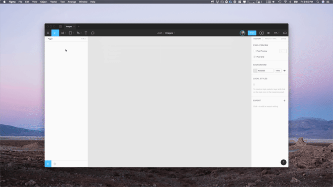После этого откроется браузер файлов, который позволяет выбрать несколько изображений. Отсюда, однако, мы не просто бросаем их все волей-неволей на ваш холст. Вместо этого Figma позволяет добавлять их по одному, щелкая или перетаскивая. Это дает гораздо больше контроля над компоновкой и размерами изображений при импорте.
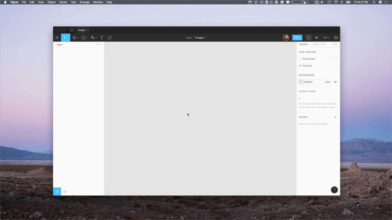Это может показаться простой вещью, но она на самом деле довольно мощная, особенно если учесть, как изображения обрабатываются в Figma. Позвольте мне перемотать назад быстро и объяснить почему. В Figma мы не рассматриваем изображение как тип объекта, вместо этого мы рассматриваем его как заливку. При импорте изображения мы создаем прямоугольник с теми же размерами и применяем к нему заливку изображением. Если вы знакомы с CSS, подумайте об этом как о настройке изображения на фоне свойства div. По сути это не означает, что ваши изображения должны выглядеть одинаково, но преимущество в том, что это значительно упрощает обрезку, изменение размера и замену изображения при проектировании. Итак, вернемся к импорту. Как уже сказано выше, когда вы используете метод изображения места, вы получаете возможность добавлять несколько изображений по одному. Самое интересное, что, поскольку изображения обрабатываются как заливки, вы можете использовать этот метод, чтобы добавить выбранные изображения к уже существующим фигурам. Один из вариантов использования этого — быстрое добавление изображений профиля в три разных дизайна (круг, квадрат и округлый квадрат).
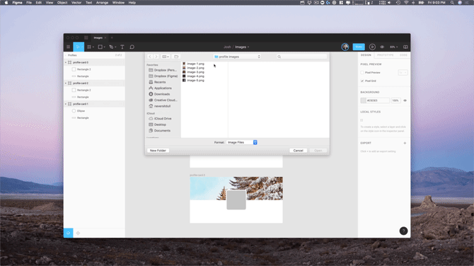Метод перетаскивания Второй метод импорта — перетаскивание. С рабочего стола или папки на компьютере вы можете просто перетащить одно или несколько изображений в Figma. С помощью этого метода мы размещаем их на холсте в выровненных рядах по десять элементов. Удобством этого метода является то, что вы можете быстро воспользоваться нашими новыми возможностями выбора. Просто выберите все изображения, которые вы импортировали, а затем настройте интервал. Или, если вы хотите проявить больше фантазии, быстро создайте сетку и задайте им порядок, как в фотоленте.

Эти два метода — импорт с помощью метода обозначения места или путем перетаскивания — чрезвычайно универсальны, но требуют, чтобы у вас были изображения, уже загруженные на компьютер. А что если вы хотите быстро опробовать несколько идей, не занимая драгоценное место на жестком диске? Не волнуйтесь, Фигма и тут поможет. Копировать + вставить Третий способ импорта изображений — это простое копирование и вставка. Когда вы просматриваете изображение, и думаете, что нашли то, что надо, просто щелкните правой кнопкой мыши на изображении и выберите Копировать (это должно работать из любого браузера). Возвращаясь к Figma, вы можете вставить скопированное изображение в файл. Хотя метод работает только с одним изображением за раз, это быстрый способ опробовать кучу идей, плюс он не требует посредника а-ля жесткий диск. Обработка изображений в Фигма Теперь, когда у вас есть изображение внутри Figma, вы можете редактировать его по велению вашего сердца. Хотя мы не делаем никаких заявлений о том, что Figma является инструментом для редактирования фотографий, мы предоставляем возможность сделать некоторые быстрые изменения, такие как настройка экспозиции или контраста.
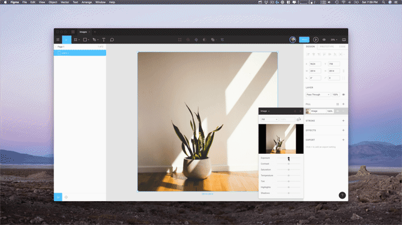По умолчанию изображения заполняют любую форму, в которой они находятся, однако мы даем полный контроль над этим. Если вы нажмете на настройку заливки на панели свойств, вы увидите новое окно. В верхней части этого окна вы найдете небольшое выпадающее меню, которое позволяет переключаться между режимами заполнения изображения. Заполнение (Fill) Как вы можете видеть, изображение будет заполнено до границ формы, в которой она находится.
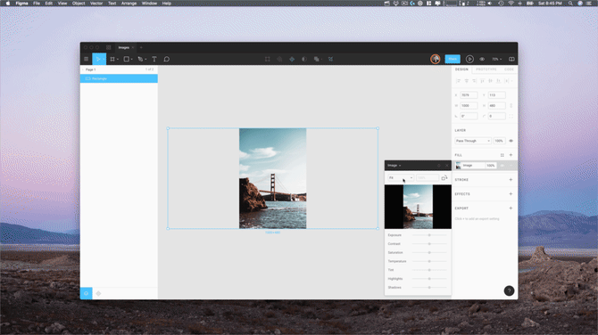По размеру (Fit) Расположение по размеру гарантирует, что вы всегда будете видеть полное изображение в вашей форме. Вы заметите, что это может образовать пустое пространство вокруг изображения.
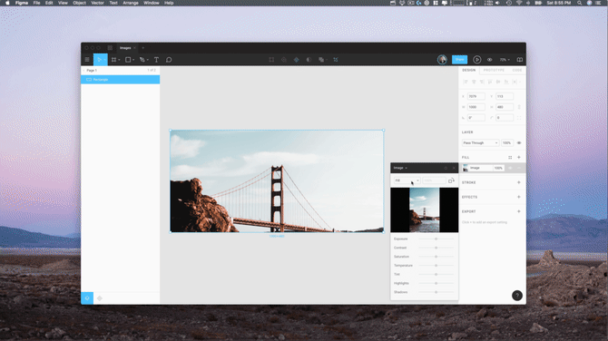Обрезать (Crop) Обрезка позволяет изменять размер и перемещать изображение по границам фигуры.

Плитка (Замостить, Tile) Что ж... вы поняли идею! улыбаюсь
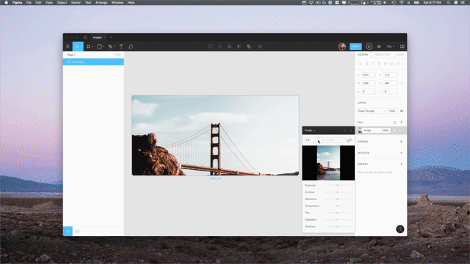Советы и рекомендации Теперь, когда вы являетесь экспертом по импорту и манипуляциям с изображениями в Figma, время поделиться несколькими советами и трюками, чтобы помочь применить эти методы на практике. Быстрый кроп Нужно быстро обрезать изображение? Сэкономьте несколько кликов, выбрав слой изображения и нажав кнопку Сrop в верхней панели инструментов. Или, если вы поклонник сочетаний клавиш (что вероятнее всего), просто удерживайте кнопку Оption и дважды щелкните по изображению, чтобы вызвать настройку обрезки.
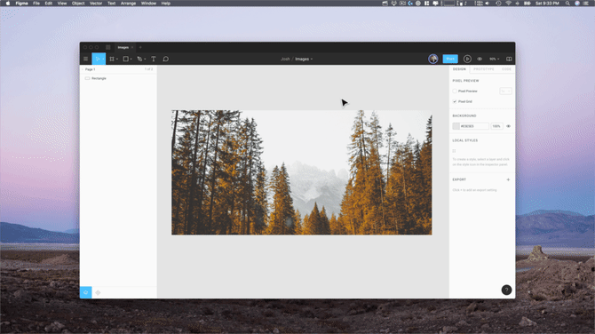Изображения как стили Знаете ли вы, что можете создать стиль из своего изображения, а затем опубликовать этот стиль в библиотеке команды? Для этого просто выберите картинку, нажмите на кнопку + (create new color style), а затем дайте ему имя. Отсюда вы можете сохранить стиль локально для файла, в котором работаете, или опубликовать его в своей библиотеке.
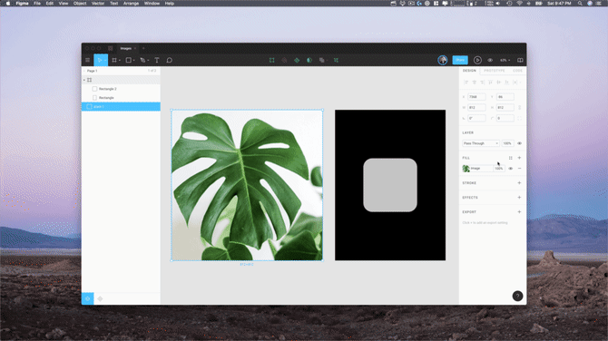Многослойные заливки и режимы наложения Не буду вдаваться в подробности во все режимы наложения, но объясню, чем может быть полезно добавление нескольких слоев заливки. Предположим, вы хотите сделать свой образ черно-белым. Один из способов сделать это — настроить ползунок насыщенности в настройках заливки. Однако, если вам когда-нибудь понадобится поменять это изображение на другое, вам придется повторно применить эту настройку. Здесь помогут слои заливки и режимы наложения.
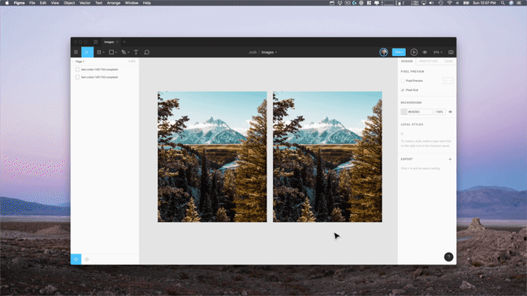Добавив сплошную заливку, задав цвет черным или белым, а затем изменив режим наложения на Сolor, вы получите черно-белые изображения с более тонким управлением. Копирование слоев заливки Один трюк, который сэкономит массу времени, заключается в том, что вы можете копировать и вставлять слои заливки (это также относится к слоям обводок и эффектов). Продолжая пример выше, это позволяет быстро взять черно-белый слой заливки и применить его к дополнительным изображениям с помощью Сtrl+с и Сtrl +v.
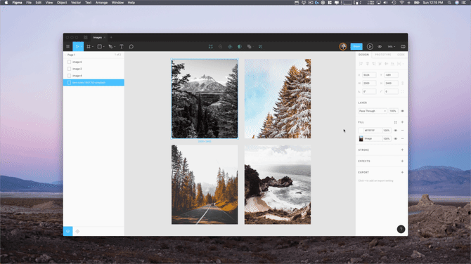Изображения в виде обводок Хотя может быть не так много вариантов использования изображения в качестве обводки, хорошо знать, что Фигма поддерживает и это улыбаюсь
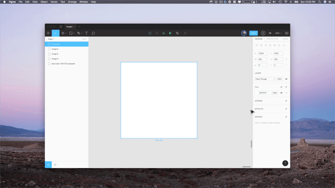Как уже было сказано, изображения являются важной частью процесса проектирования. Работаете ли вы с ними на ежедневной основе или только когда нужно обновить аватар в Twitter, вы не можете игнорировать это. Поэтому надеемся, это руководство было полезно, от поиска предпочтительного метода импорта до ускорения процесса проектирования с помощью стилей изображений.